Unit 5
Stage Decision Problems and the Linear Quadratic Regulator

4SC000, Q2 2026-2027
Duarte Antunes
Recap
Optimal control formulation
- Dynamic model & cost function (transition diagram for discrete optimization problems).
- Computing an optimal policy vs computing an optimal path.
Dynamic programming algorithm
- Allows to compute policies (to deal with uncertainty).
- Equivalent way to write it: DP equation.
- Stochastic dynamic programming: computes a policy that minimizes an expected cost.
Alternative algorithms
- To compute optimal paths, alternative algorithms (e.g. Dijkstra’s) may be more efficient.
Partial information
- When there is only partial information about the state rely on the Bayes filter.
Goals of part II
Introduce optimal control concepts for stage decision problems.
| Discrete optimization problems | Stage decision problems | |
|---|---|---|
| Formulation | Transition diagram | Dynamic system & additive cost function |
| DP algorithm & Stochastic DP | Graphical DP algorithm & DP equation | DP equation |
| Alternative algorithms | Dijkstra’s algorithm | Static optimization |
| Partial information | Bayes filter | Kalman filter |
| Application focus | Operational research & Computer science | Digital control |
Outline
- Dynamic programming for stage decision problems
- Linear quadratic regulator
Stage decision problems
Dynamic model
\[x_{k+1} = f_k(x_k, u_k) \qquad k \in \{0,\dots,h-1\}\]
Cost function
\[\sum_{k=0}^{h-1} g_k(x_k, u_k) + g_h(x_h)\]
- State \(x_k \in X_k\) and input \(u_k \in U_k(x_k)\) live in arbitrary spaces.
- If these spaces are discrete this is a discrete optimization problem.
- Typically \(x_k \in \mathbb{R}^n\) and \(u_k \in \mathbb{R}^m\) for every \(k \in \{0,\dots,h-1\}\).
- Goals: find an optimal path and find an optimal policy.
Optimal path
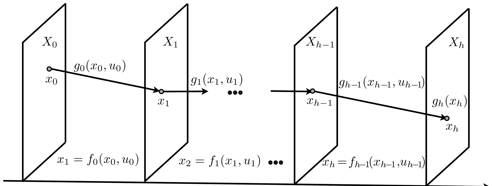
Stage 0, Stage 1, \(\dots\), Stage \(h-1\), Stage \(h\).
- Given an initial condition \(x_0\), a path is a set of decisions \(\{u_0, u_1, \dots, u_{h-1}\}\) such that \(u_k \in U_k(x_k)\) and \(\{(x_0,u_0),\dots,(x_{h-1},u_{h-1})\}\) satisfy the equations of the dynamic model.
- A path is said to be optimal if there does not exist another path with a strictly smaller cost.
Optimal policy
Policy. A policy is a set of \(h\) functions \(\pi = \{\mu_0,\dots,\mu_{h-1}\}\), \(\mu_k : X_k \to U_k\).
Optimal policy. A policy is said to be optimal if for every state \(x_\ell\) at every stage \(\ell \in \{0,\dots,h-1\}\), \(\mu_\ell(x_\ell)\) is the first action of an optimal path for the tail subproblem which considers only stages \(\{\ell,\ell+1,\dots,h\}\) with initial condition \(x_\ell\) and cost
\[\sum_{k=\ell}^{h-1} g_k(x_k,u_k) + g_h(x_h)\]
Dynamic programming algorithm
Start with \(J_h(x_h) = g_h(x_h)\) for every \(x_h \in X_h\) and for each decision stage, starting at the last and moving backwards, \(k \in \{h-1,h-2,\dots,0\}\), compute \(\mu_k\) and \(J_k\) from
\[J_k(x_k) = \min_{u_k \in U_k(x_k)} g_k(x_k,u_k) + J_{k+1}(f_k(x_k,u_k)) \quad \text{(DP equation)}\]
and
\[\mu_k(x_k) = u_k\]
where \(u_k\) is a minimizer in the DP equation, i.e.,
\[J_k(x_k) = g_k(x_k,\mu_k(x_k)) + J_{k+1}(f_k(x_k,\mu_k(x_k)))\]
Then \(\{\mu_0,\dots,\mu_{h-1}\}\) is an optimal policy.
Theorem The policy obtained with the DP algorithm is an optimal policy (proof in the appendix).
Simple integrator example
Consider the following simple example of a stage-decision problem.
Dynamic model \(\quad x_{k+1} = x_k + u_k \qquad k \in \{0,1\}\)
Cost \(\quad \displaystyle\sum_{k=0}^1 x_k^2 + u_k^2 + g_2(x_2)\)
Terminal cost
- Quadratic: \(g_2(x_2) = x_2^2\)
- Non-quadratic: \(g_2(x_2) = e^{x_2}\)
Quadratic terminal cost
Step 1 \(\quad x_2 = x_1 + u_1\)
\[J_1(x_1) = \min_{u_1} g_1(x_1,u_1) + g_2(x_2) = \min_{u_1} x_1^2+u_1^2+x_2^2 = \min_{u_1} \underbrace{2(x_1^2+u_1^2+x_1u_1)}_{Q_{x_1}(u_1),\ \text{quadratic function of } u_1}\]
How to compute the minimum? Differentiate and equate to zero to find the minimizer!
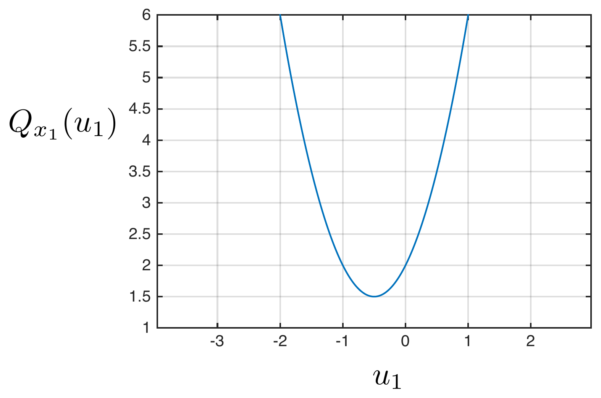
\[\frac{d}{du_1}Q_{x_1}(u_1)=0 \iff 2(2u_1+x_1)=0 \iff u_1=-\frac{1}{2}x_1\]
Replacing in \(Q_{x_1}(u_1)\) we obtain the cost-to-go \(J_1(x_1) = \frac{3}{2}x_1^2\)
Quadratic terminal cost
Step 2 \(\quad x_1 = x_0+u_0\)
\[J_0(x_0) = \min_{u_0} g_0(x_0,u_0)+J_1(x_1) = \min_{u_0} x_0^2+u_0^2+\frac{3}{2}x_1^2 = \min_{u_0} \frac{5}{2}x_0^2+3u_0x_0+\frac{5}{2}u_0^2\]
Differentiating and equating to zero we obtain a function belonging to the optimal policy
\[u_0 = -\frac{3}{5}x_0\]
which leads to the cost-to-go
\[J_0(x_0) = \frac{8}{5}x_0^2\]
Optimal policy and optimal path
Optimal policy
\[u_0=-\frac{3}{5}x_0 \qquad u_1=-\frac{1}{2}x_1\]
Optimal path
\[x_0=1 \quad u_0=-\frac{3}{5} \qquad\qquad u_1=-\frac{1}{5}\] \[x_0=1 \quad x_1=\frac{2}{5} \qquad\qquad x_2=\frac{1}{5}\]
Computed by using \(x_{k+1}=x_k+u_k\), \(k \in \{0,1\}\).
Optimal cost
\[J_0(1) = \frac{8}{5}\]
Non-quadratic terminal cost
Let us try to apply the dynamic programming algorithm considering a non-quadratic terminal cost \(g_2(x_2)=e^{x_2}\).
Step 1 \(\quad x_2=x_1+u_1\)
\[J_1(x_1) = \min_{u_1} g_1(x_1,u_1)+g_2(x_2) = \min_{u_1} x_1^2+u_1^2+e^{x_2}\]
Differentiating and equating to zero, we obtain
\[2u_1+e^{x_1+u_1}=0\]
We cannot find an analytical solution
- this equation implicitly determines \(u_1\) from \(x_1\) but there is not an explicit form.
- This implies that it is not easy to determine \(u_1=\mu_1(x_1)\) and move to step 2.
Discussion
Linear dynamic models, quadratic cost
- For these problems, we can explicitly obtain the optimal policy as shown next.
Non-linear dynamic models and/or non-quadratic cost
- Very hard to apply DP and hence obtain optimal policies.
- This leads to approximation techniques such as discretization.
- Another class of approximation techniques will be addressed in the next lectures.
Outline
- Dynamic programming for stage decision problems
- Linear quadratic regulator
Linear quadratic regulator
Given
Dynamic model \(\quad x_{k+1}=A_kx_k+B_ku_k \qquad k \in \{0,\dots,h-1\}\)
Cost function \(\quad \displaystyle\sum_{k=0}^{h-1} \begin{bmatrix}x_k^\intercal & u_k^\intercal\end{bmatrix}\begin{bmatrix}Q_k & S_k \\ S_k^\intercal & R_k\end{bmatrix}\begin{bmatrix}x_k \\ u_k\end{bmatrix} + x_h^\intercal Q_h x_h\)
Find
Optimal policy \(\quad u_k=\mu_k(x_k) \qquad k \in \{0,\dots,h-1\}\)
- This is the finite-horizon linear quadratic optimal control problem in discrete-time.
- The solution when \(h\) approaches infinity and the matrices in the dynamic model and cost function are time-invariant is the linear quadratic regulator.
Remarks
- The linear quadratic regulator is one of the celebrated results in control theory and one of the main achievements of optimal control.
- Assumptions: \(Q_k, R_k\) are symmetric, \(\begin{bmatrix}Q_k & S_k \\ S_k^\intercal & R_k\end{bmatrix} \geq 0\), \(Q_h \geq 0\), \(R_k > 0\).
- Model and cost are often time-invariant, i.e., \(x_{k+1}=Ax_k+Bu_k\) and \(\sum_{k=0}^{h-1}\begin{bmatrix}x_k^\intercal & u_k^\intercal\end{bmatrix}\begin{bmatrix}Q & S \\ S^\intercal & R\end{bmatrix}\begin{bmatrix}x_k \\ u_k\end{bmatrix} + x_h^\intercal Q_h x_h\)
- Cost function can result from a continuous-time problem.
- However, in general the cost is specified in discrete-time and used as a tuning knob to obtain desired specifications (e.g. overshoot, etc).
- We focus on the stabilization problem, i.e., driving the state to zero.
- For the reference tracking problem check the notes, exercises and jupyter notebooks.
Dynamic programming algorithm
Step 1 \(\quad x_h = A_{h-1}x_{h-1}+B_{h-1}u_{h-1}\)
\[J_{h-1}(x_{h-1}) = \min_{u_{h-1}} \begin{bmatrix}x_{h-1}^\intercal & u_{h-1}^\intercal\end{bmatrix}\begin{bmatrix}Q_{h-1} & S_{h-1} \\ S_{h-1}^\intercal & R_{h-1}\end{bmatrix}\begin{bmatrix}x_{h-1} \\ u_{h-1}\end{bmatrix} + \underbrace{J_h(x_h)}_{x_h^\intercal Q_h x_h}\]
terminal cost: \(J_h(A_{h-1}x_{h-1}+B_{h-1}u_{h-1}) = (A_{h-1}x_{h-1}+B_{h-1}u_{h-1})^\intercal Q_h (A_{h-1}x_{h-1}+B_{h-1}u_{h-1})\)
Then
\[J_{h-1}(x_{h-1}) = \min_{u_{h-1}} x_{h-1}^\intercal(A_{h-1}^\intercal Q_h A_{h-1}+Q_{h-1})x_{h-1}\] \[+\ 2u_{h-1}^\intercal(S_{h-1}^\intercal+B_{h-1}^\intercal Q_h A_{h-1})x_{h-1} + \underbrace{u_{h-1}^\intercal(B_{h-1}^\intercal Q_h B_{h-1}+R_{h-1})u_{h-1}}_{\text{quadratic function of } u_{h-1}}\]
Minimizing a quadratic function in \(\mathbb{R}^n\)
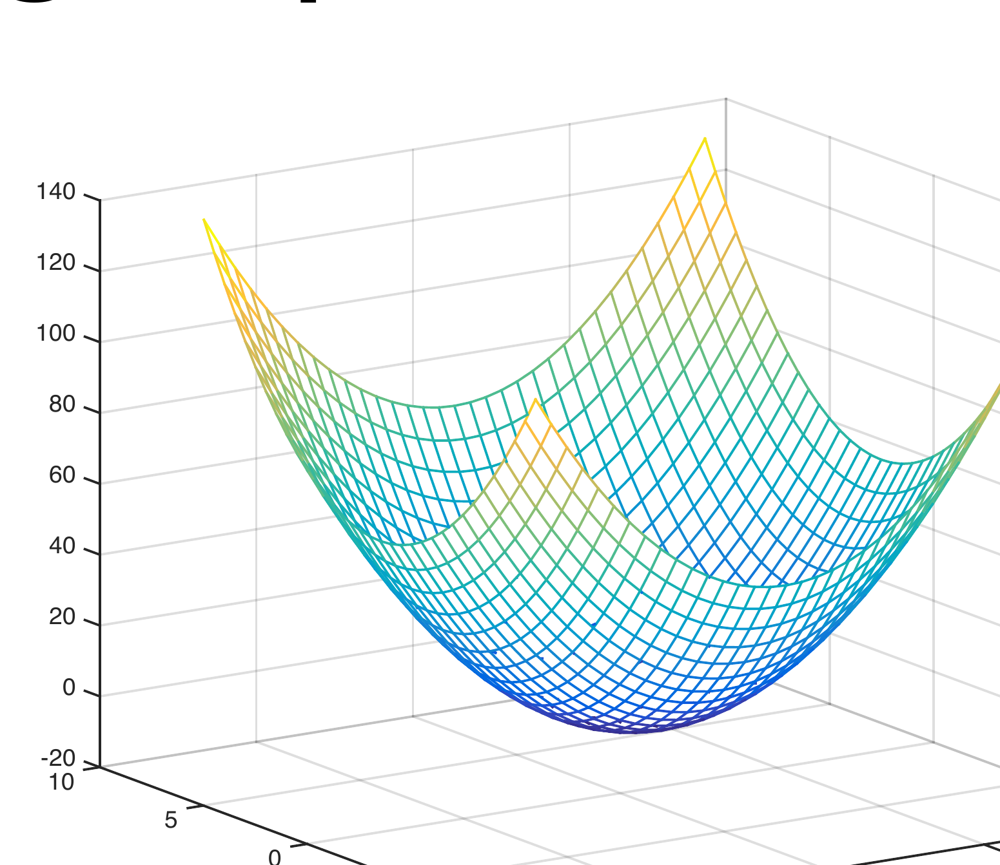
\[\min_{u \in \mathbb{R}^n} J(u) \qquad J(u) = u^\intercal Xu+2u^\intercal y+z \qquad X>0\]
Unique minimizer \(\quad \nabla J(u)=0 \iff 2Xu+2y=0 \iff u=-X^{-1}y\)
Minimum \(\quad J(-X^{-1}y) = y^\intercal X^{-1}XX^{-1}y-2y^\intercal X^{-1}y+z = z-y^\intercal X^{-1}y\)
Dynamic Programming
Step 1 (continued)
\[J_{h-1}(x_{h-1}) = \min_{u_{h-1}} x_{h-1}^\intercal \underbrace{(A_{h-1}^\intercal Q_h A_{h-1}+Q_{h-1})}_{z} x_{h-1}\] \[+\ 2u_{h-1}^\intercal \underbrace{(S_{h-1}^\intercal+B_{h-1}^\intercal Q_h A_{h-1})}_{y} x_{h-1} + u_{h-1}^\intercal \underbrace{(B_{h-1}^\intercal Q_h B_{h-1}+R_{h-1})}_{X} u_{h-1}\]
Policy
\[u_{h-1} = -X^{-1}y = -\big(B_{h-1}^\intercal Q_h B_{h-1}+R_{h-1}\big)^{-1}\big(S_{h-1}^\intercal+B_{h-1}^\intercal Q_h A_{h-1}\big)x_{h-1}\]
Cost-to-go
\[J_{h-1}(x_{h-1}) = z-y^\intercal X^{-1}y\] \[= x_{h-1}^\intercal\Big[A_{h-1}^\intercal Q_h A_{h-1}+Q_{h-1} - (S_{h-1}+A_{h-1}^\intercal Q_h B_{h-1})(B_{h-1}^\intercal Q_h B_{h-1}+R_{h-1})^{-1}(S_{h-1}^\intercal+B_{h-1}^\intercal Q_h A_{h-1})\Big]x_{h-1}\]
Dynamic Programming
Step 2 \(\quad x_{h-1}=A_{h-2}x_{h-2}+B_{h-2}u_{h-2}\)
\[J_{h-2}(x_{h-2}) = \min_{u_{h-2}} \begin{bmatrix}x_{h-2}^\intercal & u_{h-2}^\intercal\end{bmatrix}\begin{bmatrix}Q_{h-2} & S_{h-2} \\ S_{h-2}^\intercal & R_{h-2}\end{bmatrix}\begin{bmatrix}x_{h-2} \\ u_{h-2}\end{bmatrix} + \underbrace{J_{h-1}(x_{h-1})}_{x_{h-1}^\intercal P_{h-1} x_{h-1}}\]
Since the cost-to-go is quadratic (as the terminal cost) we can apply the same reasoning and obtain
\[u_{h-2} = K_{h-2}x_{h-2}\]
\[J_{h-2}(x_{h-2}) = x_{h-2}^\intercal P_{h-2}x_{h-2}\]
\[K_{h-2} = -\big(B_{h-2}^\intercal P_{h-1}B_{h-2}+R_{h-2}\big)^{-1}\big(S_{h-2}^\intercal+B_{h-2}^\intercal P_{h-1}A_{h-2}\big)\]
\[P_{h-2} = A_{h-2}^\intercal P_{h-1}A_{h-2}+Q_{h-2} - \big(S_{h-2}+A_{h-2}^\intercal P_{h-1}B_{h-2}\big)\big(B_{h-2}^\intercal P_{h-1}B_{h-2}+R_{h-2}\big)^{-1}\big(S_{h-2}^\intercal+B_{h-2}^\intercal P_{h-1}A_{h-2}\big)\]
Dynamic Programming
Step \(h-k\) \(\quad x_{k+1}=A_kx_k+B_ku_k\)
\[J_k(x_k) = \min_{u_k} \begin{bmatrix}x_k^\intercal & u_k^\intercal\end{bmatrix}\begin{bmatrix}Q_k & S_k \\ S_k^\intercal & R_k\end{bmatrix}\begin{bmatrix}x_k \\ u_k\end{bmatrix} + \underbrace{J_{k+1}(x_{k+1})}_{x_{k+1}^\intercal P_{k+1} x_{k+1}}\]
\[u_k = K_kx_k \qquad J_k(x_k) = x_k^\intercal P_k x_k\]
\[K_k = -\big(B_k^\intercal P_{k+1}B_k+R_k\big)^{-1}\big(S_k^\intercal+B_k^\intercal P_{k+1}A_k\big)\]
\[P_k = A_k^\intercal P_{k+1}A_k+Q_k - \big(S_k+A_k^\intercal P_{k+1}B_k\big)\big(B_k^\intercal P_{k+1}B_k+R_k\big)^{-1}\big(S_k^\intercal+B_k^\intercal P_{k+1}A_k\big)\]
(Riccati equation)
Thus, simply iterate these equations for \(k \in \{h-1,\dots,1,0\}\) starting with \(P_h=Q_h\) to obtain the optimal policy \(u_k=K_kx_k\).
The optimal cost for a given initial condition is \(J_0(x_0)=x_0^\intercal P_0 x_0\).
Example: double integrator
Consider a double integrator
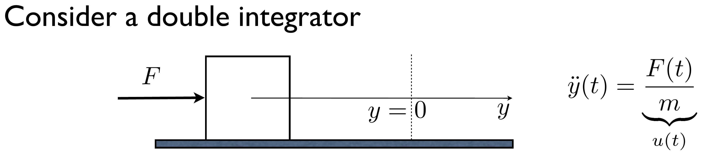
\[\ddot y(t) = \frac{F(t)}{m}\]
Continuous-time model
\[\begin{bmatrix}\dot y(t) \\ \dot v(t)\end{bmatrix} = \begin{bmatrix}0 & 1 \\ 0 & 0\end{bmatrix}\begin{bmatrix}y(t) \\ v(t)\end{bmatrix} + \begin{bmatrix}0 \\ 1\end{bmatrix}u(t) \qquad x(t)=[y(t)\ \ v(t)]^\intercal\]
Discretization
\[x_{k+1} = e^{\begin{bmatrix}0&1\\0&0\end{bmatrix}\tau}x_k + \int_0^\tau e^{\begin{bmatrix}0&1\\0&0\end{bmatrix}r}dr\begin{bmatrix}0\\1\end{bmatrix}u_k = \begin{bmatrix}1 & \tau \\ 0 & 1\end{bmatrix}x_k + \begin{bmatrix}\frac{\tau^2}{2} \\ \tau\end{bmatrix}u_k\]
Example: double integrator
Dynamic model \(\quad x_{k+1} = \begin{bmatrix}1 & \tau \\ 0 & 1\end{bmatrix}x_k + \begin{bmatrix}\frac{\tau^2}{2} \\ \tau\end{bmatrix}u_k \qquad \tau=0.2\)
Qualitative goal: drive the mass to position zero in a fast way but with reasonable actuation values.
To achieve this goal let us start with this cost function
\[\sum_{k=0}^{h-1} x_k^\intercal Qx_k+u_k^\intercal Ru_k+x_h^\intercal Q_hx_h\]
\[Q=\begin{bmatrix}1&0\\0&1\end{bmatrix} \qquad R=1 \qquad h=5 \qquad Q_h=\begin{bmatrix}10&0\\0&10\end{bmatrix}\]
and then tune these parameters to improve the results.
Dynamic programming
Iterate the following equations to obtain the optimal policy
\[K_k = -\big(B_k^\intercal P_{k+1}B_k+R_k\big)^{-1}\big(S_k^\intercal+B_k^\intercal P_{k+1}A_k\big)\]
\[P_k = A_k^\intercal P_{k+1}A_k+Q_k - \big(S_k+A_k^\intercal P_{k+1}B_k\big)\big(B_k^\intercal P_{k+1}B_k+R_k\big)^{-1}\big(S_k^\intercal+B_k^\intercal P_{k+1}A_k\big)\]
\[P_5=Q_5=\begin{bmatrix}10&0\\0&10\end{bmatrix} \qquad k \in \{4,3,2,1,0\}\]
First iteration
\[K_4 = -\Big(\begin{bmatrix}0.02 & 0.2\end{bmatrix}\begin{bmatrix}10&0\\0&10\end{bmatrix}\begin{bmatrix}0.02\\0.2\end{bmatrix}+1\Big)^{-1}\begin{bmatrix}0.02&0.2\end{bmatrix}\begin{bmatrix}10&0\\0&10\end{bmatrix}\begin{bmatrix}1&0.2\\0&1\end{bmatrix} = \begin{bmatrix}-0.1425 & -1.4530\end{bmatrix}\]
\[P_4 = \begin{bmatrix}1&0.2\\0&1\end{bmatrix}^\intercal\begin{bmatrix}10&0\\0&10\end{bmatrix}\begin{bmatrix}1&0.2\\0&1\end{bmatrix} + \begin{bmatrix}1&0\\0&1\end{bmatrix} - \begin{bmatrix}1&0.2\\0&1\end{bmatrix}^\intercal\begin{bmatrix}10&0\\0&10\end{bmatrix}\begin{bmatrix}0.02\\0.2\end{bmatrix}(-K_4) = \begin{bmatrix}10.9715 & 1.7094\\1.7094 & 8.4359\end{bmatrix}\]
Dynamic programming
Next iterations
\[P_0=\begin{bmatrix}12.121&5.702\\5.702&9.085\end{bmatrix} \quad P_1=\begin{bmatrix}12.295&5.165\\5.165&8.675\end{bmatrix} \quad P_2=\begin{bmatrix}12.188&4.311\\4.311&8.2725\end{bmatrix} \quad P_3=\begin{bmatrix}11.739&3.144\\3.144&8.0782\end{bmatrix}\]
\[K_0=[-0.918\ \ -1.503] \quad K_1=[-0.807\ \ -1.432] \quad K_2=[-0.638\ \ -1.368] \quad K_3=[-0.414\ \ -1.353]\]
Optimal policy \(\quad u_k=K_kx_k, \ k \in \{0,1,\dots,4\}\)
Optimal path for initial condition \(x_0=[1\ \ 0]^\intercal\) (iterate \(x_{k+1}=Ax_k+Bu_k\), \(u_k=K_kx_k\))
\[(x_0,u_0) = ([1\ \ 0]^\intercal, -0.918) \qquad (x_3,u_3) = ([0.8724\ \ {-0.330}]^\intercal, 0.085)\] \[(x_1,u_1) = ([0.982\ \ {-0.184}]^\intercal, -0.529) \qquad (x_4,u_4) = ([0.8082\ \ {-0.313}]^\intercal, 0.339)\] \[(x_2,u_2) = ([0.934\ \ {-0.289}]^\intercal, -0.200) \qquad x_5 = [0.7525\ \ {-0.2448}]^\intercal\]
Plots and tuning
Transitory responses are still far from qualitative specifications
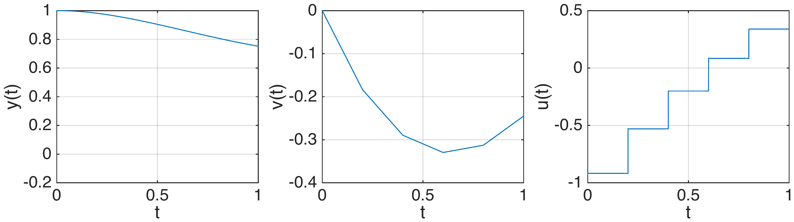
Guidelines to tune the cost
- By increasing the terminal cost one expects that the response gets closer to the desired final position.
- Same is expected by penalizing more the position error relatively to the velocity error.
- Decreasing the penalty on the control action will allow more control authority to reach the origin.
Increasing terminal cost
Final position error improved by increasing terminal cost
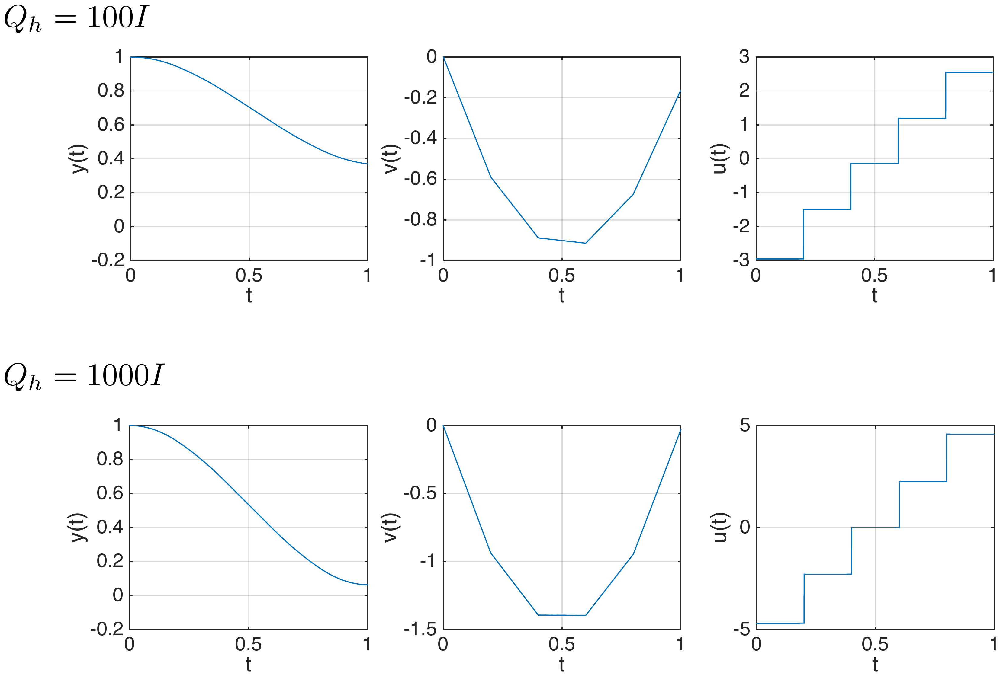
Changing state cost
Increasing position cost leads to smaller position error and larger velocity
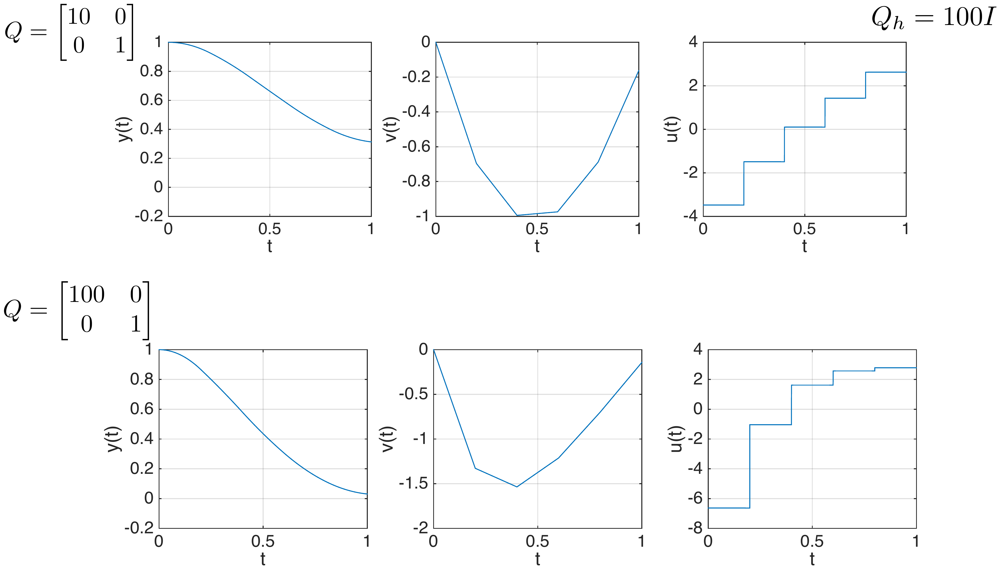
Changing control cost
Decreasing control penalty leads to fast responses, but large actuation!
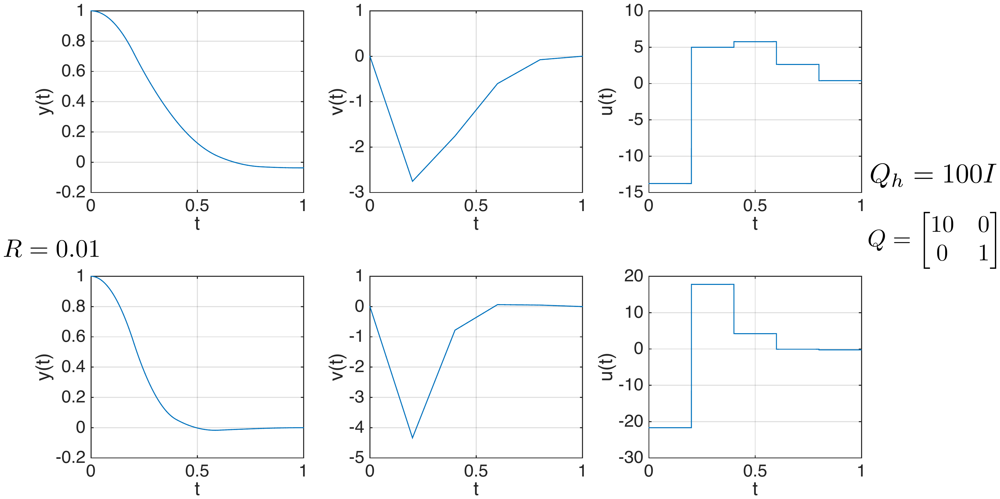
Cheap control
As \(R \to 0\) we obtain deadbeat control: zero state is achieved in 2 steps
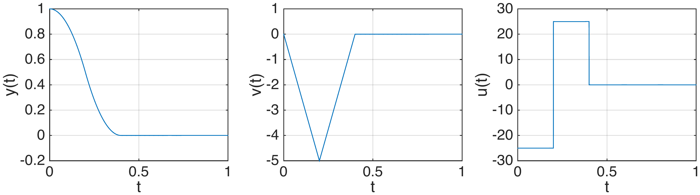
Can we then always drive a mass to zero in two sampling periods?
- No, because this typically requires very large unfeasible actuations.
- Actuators have limitations which were not incorporated in our linear model.
- In this LQR framework the solution is to increasingly penalize the control input until actuation constraints are met. More on this point later.
Increasing the horizon
Let us increase the horizon considering \(Q=Q_h=I\), \(R=1\), \(x_0=[1\ \ 0]^\intercal\)
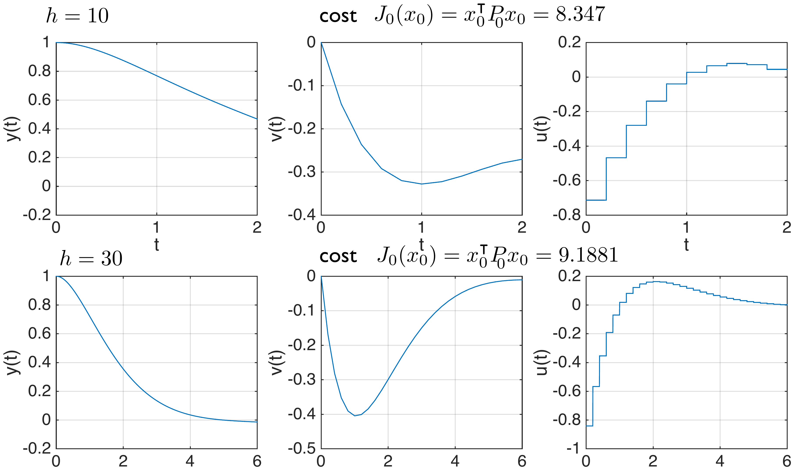
\(h=10\): cost \(J_0(x_0)=x_0^\intercal P_0 x_0 = 8.347\) \(\qquad\) \(h=30\): cost \(J_0(x_0)=x_0^\intercal P_0 x_0 = 9.1881\)
Increasing the horizon
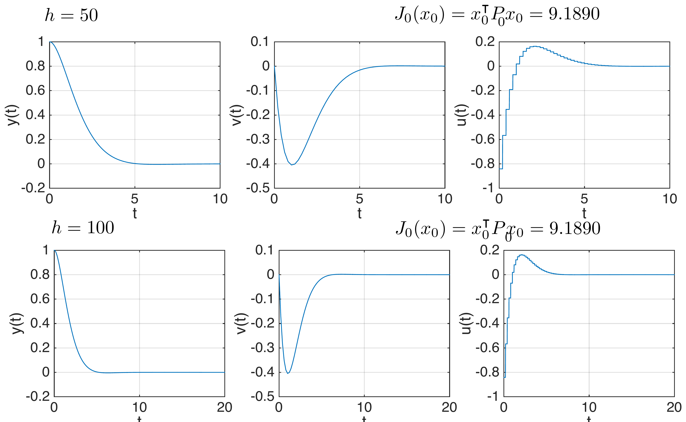
\(h=50\): cost \(J_0(x_0)=x_0^\intercal P_0 x_0 = 9.1890\) \(\qquad\) \(h=100\): cost \(J_0(x_0)=x_0^\intercal P_0 x_0 = 9.1890\)
The cost converges to a constant as the time horizon increases.
Discussion
- Since the cost is positive-definite, if the horizon is large the optimal input should drive the state to zero to stop paying cost.
- This explains why the cost converges as the horizon increases.
\[\sum_{k=0}^{h_0} g_k(x_k,K_ku_k) + \underbrace{\sum_{k=h_0+1}^{h-1} g_k(x_k,K_ku_k)+g_T(x_T,u_T)}_{\approx\ 0 \text{ since } x_k\approx 0 \text{ and } u_k=K_kx_k}\]
- This reasoning is valid for every initial condition. Thus if \(x_0^\intercal P_0 x_0\) converges as \(h\to\infty\) then \(P_0\) converges, where \(P_0\) results from the recursion
\[P_k = A^\intercal P_{k+1}A+Q - (S+A^\intercal P_{k+1}B)(B^\intercal P_{k+1}B+R)^{-1}(S^\intercal+B^\intercal P_{k+1}A) \qquad k \in \{h-1,h-2,\dots,0\}\]
- Note that we are now considering time-invariant \(A_k, B_k, Q_k, R_k, S_k\).
Discussion
For the double integrator example with \(Q=Q_h=I\), \(R=1\):
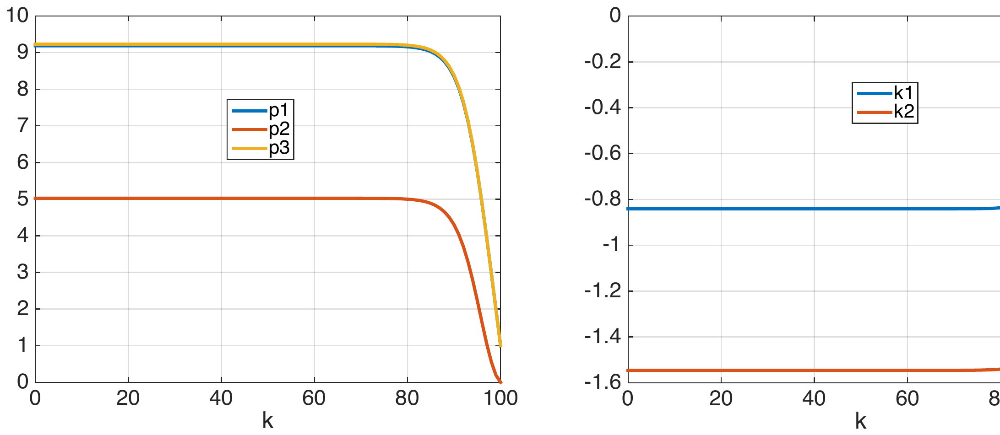
\(P_k=\begin{bmatrix}p_{1,k}&p_{2,k}\\p_{2,k}&p_{3,k}\end{bmatrix} \qquad K_k=\begin{bmatrix}K_{1,k}&K_{2,k}\end{bmatrix}\)
Let \(\bar P\) denote the limit \(P_0\) of the recursion; \(P_k = A^\intercal P_{k+1}A+Q-(S+A^\intercal P_{k+1}B)(B^\intercal P_{k+1}B+R)^{-1}(S^\intercal+B^\intercal P_{k+1}A)\), then \(\bar P = A^\intercal \bar P A+Q-(S+A^\intercal \bar P B)(B^\intercal \bar P B+R)^{-1}(S^\intercal+B^\intercal \bar P A)\)
Moreover, \(K_k \to \bar K\), \(\quad \bar K = -\big(B^\intercal \bar P B+R\big)^{-1}\big(S^\intercal+B^\intercal \bar P A\big)\)
Infinite horizon LQR
Proposition (special case of [Bertsekas, Sec. 4., Proposition 4.4.1]) The optimal policy for the stage decision problem with infinite number of stages with dynamic model
\[x_{k+1}=Ax_k+Bu_k \qquad (A,B) \text{ controllable}\]
and cost function
\[\sum_{k=0}^\infty x_k^\intercal Qx_k+2x_k^\intercal Su_k+u_k^\intercal Ru_k \qquad \begin{bmatrix}Q&S\\S^\intercal&R\end{bmatrix}>0\]
is given by
\[u_k=\bar K x_k \qquad \bar K = -\big(B^\intercal \bar P B+R\big)^{-1}\big(S^\intercal+B^\intercal \bar P A\big)\]
where \(\bar P\) is the unique positive definite solution to the algebraic Riccati equation
\[\bar P = A^\intercal \bar P A+Q - \big(S+A^\intercal \bar P B\big)\big(B^\intercal \bar P B+R\big)^{-1}\big(S^\intercal+B^\intercal \bar P A\big)\]
Furthermore the closed-loop \(x_{k+1}=(A+BK)x_k\) is exponentially stable.
Discussion
- For simplicity, throughout the discussion, we assume \(S=0\).
- As mentioned in [Bertsekas, Sec. 4.1], we can relax the assumptions \((A,B)\) is controllable and \(Q\) is positive definite.
- In fact, if \((A,B)\) is controllable, \(R\) is positive definite, \(Q=NN^\intercal\) for a full rank \(N \in \mathbb{R}^{n\times r}\) (not necessarily positive definite if \(r<n\)) and \((A,N)\) is observable, then the previous theorem still holds.
- Moreover, if we further relax the assumptions to \(R\) is positive definite, \((A,B)\) is stabilizable, \(N\) full rank and \((A,N)\) is detectable then the theorem still holds except that \(P\) is not necessarily positive definite.
- Actually according to “Linear optimal control”, B. O. Andersson, J. B. Moore, Sec 14.1, we just need to assure that \(B^\intercal QB+R\) is positive definite and \((A,N)\) is observable to guarantee stability of the closed-loop.
- Therefore, we can for instance pick \(R=0\) and \(Q\) positive definite and the closed-loop is stable (this will not be the case for continuous-time optimal control problems).
Inverted pendulum
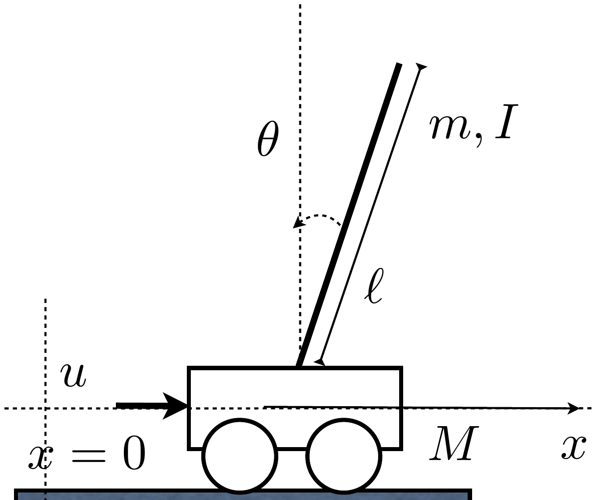
Linearized model (see [1, p. 32])
\[(I+m\ell^2)\ddot\theta - mg\ell\theta = m\ell\ddot x \qquad (M+m)\ddot x+b\dot x-m\ell\ddot\theta = u\]
State space
\[\frac{d}{dt}\begin{bmatrix}x\\\dot x\\\theta\\\dot\theta\end{bmatrix} = \begin{bmatrix}0&1&0&0\\0&-\frac{(I+m\ell^2)b}{q}&\frac{m^2g\ell^2}{q}&0\\0&0&0&1\\0&-\frac{m\ell b}{q}&\frac{mg\ell(M+m)}{q}&0\end{bmatrix}\begin{bmatrix}x\\\dot x\\\theta\\\dot\theta\end{bmatrix} + \begin{bmatrix}0\\\frac{I+m\ell^2}{q}\\0\\\frac{m\ell}{q}\end{bmatrix}u(t) \qquad q=(I+m\ell^2)(M+m)-m^2\ell^2\]
[1] Feedback control of dynamic systems, Franklin, Powell, Emani-Naeini
Time responses
\(Q=I, S=0, R=1, \tau=0.1\)
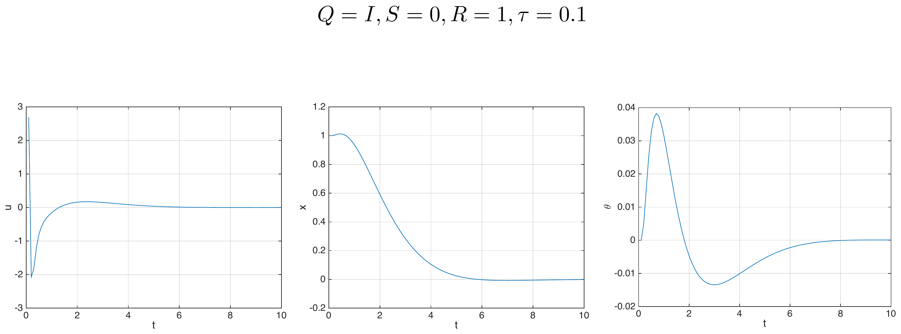
Tuning the parameters
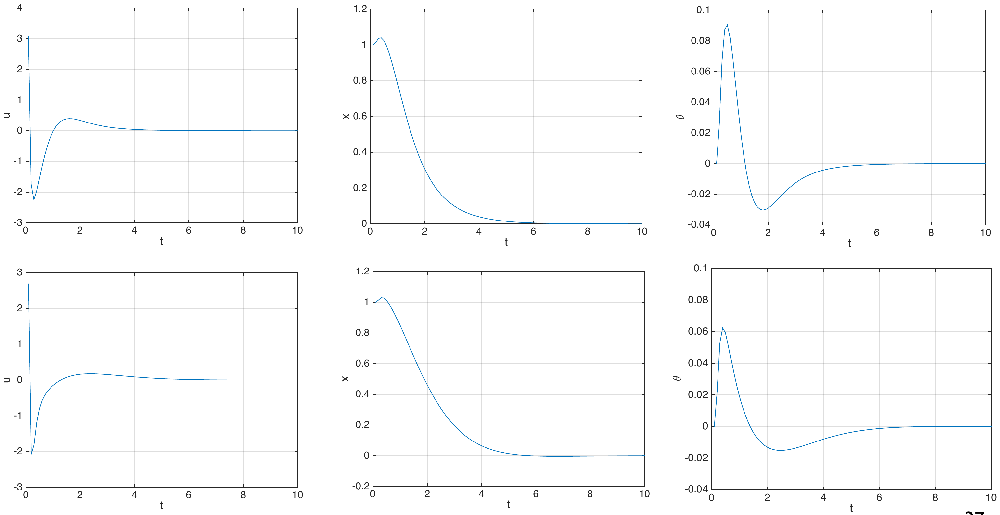
Concluding remarks
To summarize:
- Stage decision problems are extensions of discrete optimization problems for which state and input spaces can be arbitrary.
- In practice, it may be hard to obtain expressions for the costs-to-go.
- When the cost is quadratic and the system is linear we obtain a framework for state feedback control design for any linear plant.
Appendix A
Proof of optimality of dynamic programming
Proof of optimality
Theorem
The policy obtained with the DP algorithm is an optimal policy.
Proof
We shall prove using induction that \(\pi^k := \{\mu_k,\dots,\mu_{h-1}\}\) obtained by the DP algorithm is an optimal policy for the subproblem from stage \(k\) to stage \(h-1\) and that \(J_k(x_k)\) is the cost of the optimal path starting at \(x_k\).
- Step I: Prove this for \(k=h-1\).
- Step II: Assume that the induction hypothesis holds for a given \(k-1\) and prove it for \(k\).
Step I
- By construction \(\pi^{h-1}=\{\mu_{h-1}\}\) is an optimal policy as it is the first decision of the optimal path from stage \(h-1\) to stage \(h\) since
\[\min_{u_{h-1}\in U_{h-1}(x_{h-1})} g_{h-1}(x_{h-1},u_{h-1})+J_h(f_{h-1}(x_{h-1},u_{h-1})) = g_{h-1}(x_{h-1},\mu_{h-1}(x_{h-1}))+J_h(f_{h-1}(x_{h-1},\mu_{h-1}(x_{h-1})))\]
- It is also clear that
\[J_{h-1}(x_{h-1}) = \min_{u_{h-1}\in U_{h-1}(x_{h-1})} g_{h-1}(x_{h-1},u_{h-1})+J_h(f_{h-1}(x_{h-1},u_{h-1}))\]
is the optimal cost for the subproblem with initial condition \(x_{h-1}\) at stage \(h-1\).
Step II
Assume now that \(\pi^{k+1} := \{\mu_{k+1},\dots,\mu_{h-1}\}\) is an optimal policy and \(J_{k+1}(x_{k+1})\) is the cost of the optimal path which starts at initial state \(x_{k+1}\). We shall prove using contradiction that \(\pi^k := \{\mu_k,\dots,\mu_{h-1}\}\) is an optimal policy and \(J_k(x_k)\) is the cost of an optimal path which starts at initial state \(x_k\).
Argument using contradiction: if \(\pi^k\) is not optimal then there must exist a state such that \(\mu_k(x_k)\) is not the first action \(\tilde u_k (\neq \mu_k(x_k))\) of the optimal path from stage \(k\) to stage \(h\) denoted by
\[\tilde\gamma = \{(\tilde x_k,\tilde u_k), (\tilde x_{k+1},\tilde u_{k+1}), \dots, \tilde x_h)\} \qquad \tilde x_k = x_k\]
- Since we are assuming that \(\pi^{k+1} := \{\mu_{k+1},\dots,\mu_{h-1}\}\) is an optimal policy we must have
\[\tilde u_{\ell+1} = \mu_{\ell+1}(\tilde x_{\ell+1}) \quad \text{for every } \ell \in \{k+1,\dots,h-2\}\]
Step II
- The cost of such a path is
\[\bar J = \sum_{\ell=k}^{h-1} g_\ell(\tilde x_\ell,\tilde u_\ell)+g_h(\tilde x_h) = g_k(\tilde x_k,\tilde u_k) + \sum_{\ell=k+1}^{h-1} g_\ell(\tilde x_\ell,\mu_\ell(\tilde x_\ell))+g_h(\tilde x_h) = g_k(\tilde x_k,\tilde u_k)+J_{k+1}(f(\tilde x_k,\tilde u_k))\]
- However, the cost of the path which has \(\mu_k(x_k)\) as the first decision is less than or equal to the cost above (contradiction)
\[J_k(x_k) = \min_{u_k} g_k(\tilde x_k,\tilde u_k)+J_{k+1}(f(\tilde x_k,\tilde u_k)) = g_k(\tilde x_k,\mu_k(x_k))+J_{k+1}(f(\tilde x_k,\mu_k(x_k)))\] \[\leq g_k(\tilde x_k,\tilde u_k)+J_{k+1}(f(\tilde x_k,\tilde u_k)) = \bar J\]
4SC000 – Optimal Control and Reinforcement Learning